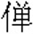

五
我生得太早一点，连康有为们“公车上书”[75]的时候，已经颇有些年纪了。政变之后，有族中的所谓长辈也者教诲我，说：康有为是想篡位，所以他的名字叫有为；有者，“富有天下”，为者，“贵为天子”也。非图谋不轨而何？我想：诚然。可恶得很！
长辈的训诲于我是这样的有力，所以我也很遵从读书人家的家教。屏息低头，毫不敢轻举妄动。两眼下视黄泉，看天就是傲慢，满脸装出死相，说笑就是放肆。我自然以为极应该的，但有时心里也发生一点反抗。心的反抗，那时还不算什么犯罪，似乎诛心之律，倒不及现在之严。
但这心的反抗，也还是大人们引坏的，因为他们自己就常常随便大说大笑，而单是禁止孩子。黔首[76]们看见秦始皇[77]那么阔气，捣乱的项羽[78]道：“彼可取而代也！”没出息的刘邦[79]却说：“大丈夫不当如是耶？”我是没出息的一流，因为羡慕他们的随意说笑，就很希望赶忙变成大人，——虽然此外也还有别种的原因。
大丈夫不当如是耶，在我，无非只想不再装死而已，欲望也并不甚奢。
现在，可喜我已经大了，这大概是谁也不能否认的罢，无论用了怎样古怪的“逻辑”。
我于是就抛了死相，放心说笑起来，而不意立刻又碰了正经人的钉子：说是使他们“失望”了。我自然是知道的，先前是老人们的世界，现在是少年们的世界了；但竟不料治世的人们虽异，而其禁止说笑也则同。那么，我的死相也还得装下去，装下去，“死而后已”[80]，岂不痛哉！
我于是又恨我生得太迟一点。何不早二十年，赶上那大人还准说笑的时候？真是“我生不辰”[81]，正当可诅咒的时候，活在可诅咒的地方了。
约翰弥耳说：专制使人们变成冷嘲[82]。我们却天下太平，连冷嘲也没有。我想：暴君的专制使人们变成冷嘲，愚民的专制使人们变成死相。大家渐渐死下去，而自己反以为卫道有效，这才渐近于正经的活人。
世上如果还有真要活下去的人们，就先该敢说，敢笑，敢哭，敢怒，敢骂，敢打，在这可诅咒的地方击退了可诅咒的时代！
四月十四日。
六
外国的考古学者们[83]联翩而至了。
久矣夫，中国的学者们也早已口口声声的叫着“保古！保古！保古！……”
但是不能革新的人种，也不能保古的。
所以，外国的考古学者们便联翩而至了。
长城久成废物，弱水[84]也似乎不过是理想上的东西。老大的国民尽钻在僵硬的传统里，不肯变革，衰朽到毫无精力了，还要自相残杀。于是外面的生力军很容易地进来了，真是“匪今斯今，振古如兹”[85]。至于他们的历史，那自然都没我们的那么古。
可是我们的古也就难保，因为土地先已危险而不安全。土地给了别人，则“国宝”虽多，我觉得实在也无处陈列。
但保古家还在痛骂革新，力保旧物地干：用玻璃板印些宋版书，每部定价几十几百元；“涅槃！涅槃！涅槃[86]！”佛自汉时已入中国，其古色古香为何如哉！买集些旧书和金石，是劬古[87]爱国之士，略作考证，赶印目录，就升为学者或高人。而外国人所得的古董，却每从高人的高尚的袖底里共清风一同流出。即不然，归安陆氏的皕宋[88]，潍县陈氏的十钟[89]，其子孙尚能世守否？
现在，外国的考古学者们便联翩而至了。
他们活有余力，则以考古，但考古尚可，帮同保古就更可怕了。有些外人，很希望中国永是一个大古董以供他们的赏鉴，这虽然可恶，却还不奇，因为他们究竟是外人。而中国竟也有自己还不够，并且要率领了少年，赤子，共成一个大古董以供他们的赏鉴者，则真不知是生着怎样的心肝。
中国废止读经了，教会学校不是还请腐儒做先生，教学生读“四书”么？民国废去跪拜了，犹太学校[90]不是偏请遗老做先生，要学生磕头拜寿么？外国人办给中国人看的报纸，不是最反对五四以来的小改革么？而外国总主笔治下的中国小主笔，则倒是崇拜道学[91]，保存国粹的！
但是，无论如何，不革新，是生存也为难的，而况保古。现状就是铁证，比保古家的万言书有力得多。
我们目下的当务之急，是：一要生存，二要温饱，三要发展。苟有阻碍这前途者，无论是古是今，是人是鬼，是《三坟》《五典》[92]，百宋千元[93]，天球河图[94]，金人玉佛，祖传丸散，秘制膏丹，全都踏倒他。
保古家大概总读过古书，“林回弃千金之璧，负赤子而趋”[95]，该不能说是禽兽行为罢。那么，弃赤子而抱千金之璧的是什么？
四月十八日。
注 释
[74] 本篇最初分两次发表于1925年4月18日、22日《京报副刊》。
[75] “公车上书” 甲午（1894）战争失败后，清政府于1895年与日本签订丧权辱国的《马关条约》。当时康有为正在北京会试，就集合各省举人一千三百余人，联名上书光绪皇帝，要求“拒和、迁都、变法”，史称“公车上书”。按汉代用公家的车子载送应征到京城的士人，所以后世举人入京会试也称“公车”。康有为，参看本卷第20页注〔5〕。下文所说“富有天下”和“贵为天子”二语，原出《孟子·万章（上）》：“富，人之所欲，富有天下，而不足以解忧；贵，人之所欲，贵为天子，而不足以解忧。”
[76] 黔首 秦代对民众的称呼。《史记·秦始皇本纪》：“分天下以为三十六郡，郡置守尉监，更名民曰黔首。”按秦自称水德，崇尚黑色。南朝宋裴骃“集解”：“黔，亦黎黑也。”
[77] 秦始皇（前259—前210） 姓嬴名政，战国时秦国的国君。于公元前221年建立了我国第一个中央集权的封建王朝。
[78] 项羽（前232—前202） 名籍，字羽，下相（今江苏宿迁西）人，秦末农民起义军领袖。出身楚国贵族，亡秦后自立为“西楚霸王”。据《史记·项羽本纪》：“秦始皇帝游会稽，渡浙江，梁与籍俱观。籍曰：‘彼可取而代也。’”
[79] 刘邦（前247—前195） 沛（今江苏沛县）人，秦末农民起义军领袖。在亡秦灭楚后建立了西汉王朝，庙号高祖。据《史记·高祖本纪》：“高祖常繇（徭）咸阳，纵观，观秦皇帝，喟然太息曰：‘嗟乎，大丈夫当如此也！’”
[80] “死而后已” 语出诸葛亮《后出师表》：“臣鞠躬尽力，死而后已。”
[81] “我生不辰” 语出《诗经·大雅·桑柔》：“我生不辰，逢天

怒。”不辰，不是时候。[82] 约翰弥耳（J.S.Mill，1806—1873） 通译约翰·穆勒，英国哲学家、经济学家。著作有《逻辑体系》、《论自由》（严复中译名分别为《穆勒名学》、《群己权界论》）等。鲁迅所译日本鹤见祐辅《思想·山水·人物》书中《说幽默》和《专门以外的工作》篇曾引用穆勒所说“专制使人变成冷嘲”的话。
[83] 外国的考古学者们 指借考古之名而来我国掠夺文物的帝国主义分子。如法国格莱那（F.Grenard）于1892年从和阗（今新疆和田）盗去梵文佛经残本、土俑等；英国斯坦因（A.Stein）于1901年在和阗盗掘汉晋木简，又于1907年、1914年先后从敦煌千佛洞盗走大批古代写本及古画、刺绣等艺术品；还有法国伯希和（P.Pelliot）也于1908年从千佛洞盗走很多唐宋文物。到作者写本文时，这种文物掠夺者更“联翩而至”，如1924年美国瓦尔纳（L.Warner）在千佛洞以特制胶布粘去壁画二十六幅；1925年2月，他又组织了一个以哈佛大学旅行团为名义的团体，带着大批胶布等材料，再次到千佛洞作有计划的盗窃，后经敦煌人民的反对阻止，才未得逞。
[84] 弱水 我国古书中关于弱水的神话传说很多。如《海内十洲记》说昆仑山有“弱水”“周回绕匝”；弱水“鸿毛不浮，不可越也。”
[85] “匪今斯今，振古如兹” 语出《诗经·周颂·载芟》。意思是不但现在，从古以来就如此。
[86] 涅槃 佛家语，梵文Nirvāna的音译。原指佛和高僧经过长期“修道”所达到的“最高境界”，即能“寂（熄）灭”、解脱一切烦恼。后世也称佛和僧人的逝世为“涅槃”、“圆寂”或“入灭”，由此引申为死的意思。
[87] 劬古 研究古代文化的意思。劬，勤劳。
[88] 归安陆氏 指陆心源（1834—1894），字刚父，号存斋，浙江归安（今吴兴）人，清末藏书家。藏有宋版书约二百种，所以他的藏书处取名为皕宋楼。他死后，这些书都由他的儿子陆树藩于1907年卖给日本岩崎兰室（静嘉堂文库）。
[89] 潍县陈氏 指陈介祺（1813—1884），字寿卿，号簠斋，山东潍县（今潍坊）人，清代古文物收藏家。藏有古代乐器钟十口，所以他的书斋取名为十钟山房。这些钟后来在1917年卖给日本财阀住友家。
[90] 犹太学校 指犹太商人哈同1915年在上海开办的仓圣明智大学及其附属中小学。哈同曾雇用王国维等担任教员，教学生读经，习古礼。每年阴历三月二十八日所谓仓颉生日时，要学生给仓颉磕头拜寿。
[91] 道学 即理学，宋代程颢、程颐、朱熹等人阐释儒家学说而形成的唯心主义思想体系。它认为“理”是宇宙的本体，把三纲五常等封建伦理道德说成是“天理”，提出“存天理，灭人欲”的主张。
[92] 《三坟》《五典》 相传是三皇五帝时的遗书，现在已不可考。《左传》昭公十二年：“是能读三坟、五典、八索、九丘。”晋代杜预注：“皆古书名。”
[93] 百宋千元 指清代乾隆、嘉庆时的藏书家黄丕烈和吴骞的藏书。黄丕烈（1763—1825），江苏吴县人，藏有宋版书一百余部，他的书室名为“百宋一廛”，意思是一百部宋版书存放处。吴骞（1733—1813），浙江海宁人，藏有元版书一千部，他的书室名为“千元十驾”，意思是元版书千部能抵宋版书百部，有如驽马十驾能抵好马一驾。
[94] 天球河图 天球相传为古雍州（今陕、甘一带）所产的美玉；河图，相传为伏羲时龙马从黄河负出的图。《尚书·顾命》：“大玉，夷玉，天球，河图，在东序。”在东序指陈列在房厅东墙一侧。
[95] “林回弃千金之璧，负赤子而趋” 语出《庄子·山木》：“林回弃千金之璧，负赤子而趋。或曰：‘为其布与？赤子之布寡矣！为其累与？赤子之累多矣！弃千金之璧，负赤子而趋，何也？’林回曰：‘彼以利合，此以天属也。’”布，古代的钱币；天属，人的天性。